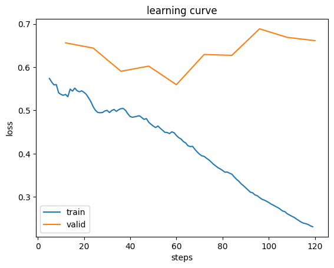
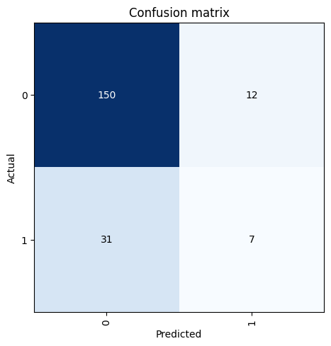
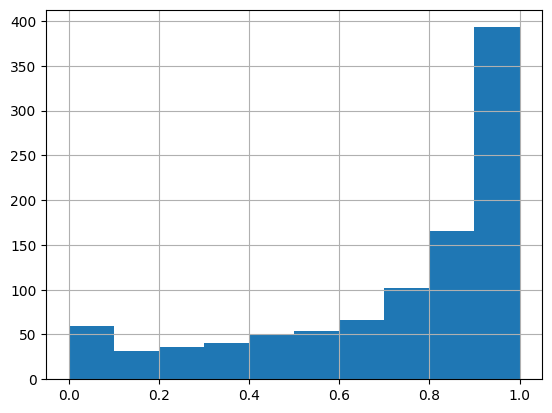
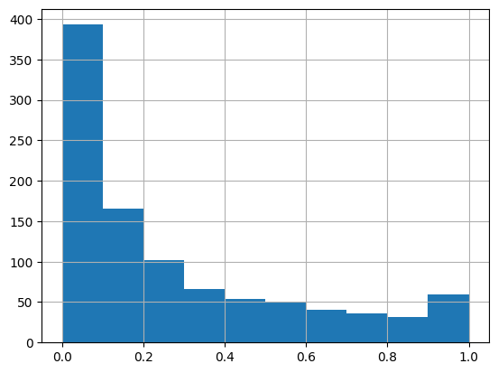

import pickle
import gc
import os
import glob
from typing import Union
import pandas as pd
import numpy as np
import matplotlib.pyplot as plt
from fastai.vision.all import *How to Save & Load FastAI Model
fastai
export
load
Save model using
learn.export(checkpoint_path). Load usinglearn = load_learner(checkpoint_path)
I had a hard time figuring out how to save and load trained fastai model. So, this is a guide to remind myself of what I’ve tried (and failed), and what works.
import fastai
fastai.__version__'2.7.15'def unpickle(fp):
print('loading', fp)
with open(fp, 'rb') as f:
x = pd.read_pickle(f)
# x = pickle.load(f, encoding='ASCII')
return x
def unpickle_multiple_pd(path:Union[str,list], drop_dup_on_cols:Union[None, list]) -> pd.DataFrame:
"""unpickle multiple pandas dataframes
input & output = pandas df
if `drop_dup_on_cols` is not None, will drop duplicate on `drop_dup_on_cols` cols.
"""
import gc
import glob
print('path', type(path), path)
if isinstance(path, list):
filenames = path
else:
filenames = list(glob.glob(path))
print('loading', filenames)
if len(filenames) > 1:
loaded_file = []
for i,f in enumerate(filenames):
if f != '':
try:
loaded_file.append(unpickle(f))
print('i', i)
gc.collect()
except:
print('loading error')
continue
gc.collect()
df = pd.concat(loaded_file)
if drop_dup_on_cols is not None:
df = df.drop_duplicates(subset=drop_dup_on_cols)
return df.reset_index(drop=True)
return unpickle(filenames[0])
def save_pickle(fp:str, x) -> None:
with open(fp, 'wb') as f:
pickle.dump(x, f)
print('saved pickle', fp)fp = '/kaggle/input/ordergen-transformers-prepostprocesd-17072024/Archive2/20210104_20231031_trainxyz_testxyz_ori.pkl'
Xtrain, ytrain, train_annos, Xtest, ytest, test_annos = unpickle(fp)loading /kaggle/input/ordergen-transformers-prepostprocesd-17072024/Archive2/20210104_20231031_trainxyz_testxyz_ori.pklprint(Xtrain.shape)
Xtrain(839200, 744)array([[ 0.8008967 , 0.8019981 , 0.70472926, ..., 0. ,
0. , 0. ],
[ 0.37820956, 0.37688217, 0.37682053, ..., 0. ,
0. , 0. ],
[-0.30258572, -0.3024994 , -0.3730603 , ..., 0. ,
0. , 0. ],
...,
[-1. , -1. , -1. , ..., 0. ,
0. , 0. ],
[-1. , -1. , -1. , ..., 0. ,
0. , 0. ],
[-1. , -1. , -1. , ..., 0. ,
0. , 0.6666667 ]], dtype=float32)print(ytrain.shape)
ytrain(839200, 1)array([[0],
[0],
[0],
...,
[0],
[0],
[0]], dtype=uint8)def pass_index(idx):
return idx
def get_x(i):
return image[i]
def get_y(i):
return label[i]SLICE = 1000 # for demonstration, we will work on small sample slice only
image = Xtrain[:SLICE]
label = ytrain[:SLICE,0] # select the first axis (col) because my labels are in 2 dimensional ie (total rows, 1)
dblock = DataBlock(
blocks=(ImageBlock, CategoryBlock),
get_items=pass_index,
get_x=get_x,
get_y=get_y)
# pass in a list of index
num_images = image.shape[0]
dls = dblock.dataloaders(list(range(num_images)))Note: We won’t be able to save the model if we have nested functions. Like below. Notice we have pass_index, get_x, get_y functions inside the make_dataloaders_from_numpy_data. The workaround is to move it out of the function.
def make_dataloaders_from_numpy_data(image, label):
def pass_index(idx):
return idx
def get_x(i):
return image[i]
def get_y(i):
return label[i]
dblock = DataBlock(
blocks=(ImageBlock, CategoryBlock),
get_items=pass_index,
get_x=get_x,
get_y=get_y)
# pass in a list of index
num_images = image.shape[0]
dls = dblock.dataloaders(list(range(num_images)))
return dls
dls = make_dataloaders_from_numpy_data(Xtrain, ytrain[:,0])
Train model
learn = vision_learner(dls, models.resnet18, loss_func=CrossEntropyLossFlat(), metrics=accuracy)Downloading: "https://download.pytorch.org/models/resnet18-f37072fd.pth" to /root/.cache/torch/hub/checkpoints/resnet18-f37072fd.pth
100%|██████████| 44.7M/44.7M [00:00<00:00, 133MB/s] learn.fine_tune(10)| epoch | train_loss | valid_loss | accuracy | time |
|---|---|---|---|---|
| 0 | 0.690889 | 0.820386 | 0.810000 | 00:48 |
| epoch | train_loss | valid_loss | accuracy | time |
|---|---|---|---|---|
| 0 | 0.534998 | 0.656172 | 0.805000 | 01:04 |
| 1 | 0.519913 | 0.644092 | 0.660000 | 01:05 |
| 2 | 0.501660 | 0.590537 | 0.755000 | 01:04 |
| 3 | 0.481192 | 0.602440 | 0.800000 | 01:04 |
| 4 | 0.448506 | 0.559592 | 0.775000 | 01:05 |
| 5 | 0.395029 | 0.629317 | 0.735000 | 01:05 |
| 6 | 0.354913 | 0.627367 | 0.800000 | 01:04 |
| 7 | 0.302945 | 0.688665 | 0.780000 | 01:04 |
| 8 | 0.265921 | 0.668892 | 0.790000 | 01:05 |
| 9 | 0.231195 | 0.661298 | 0.785000 | 01:05 |
For fun, let’s plot the model’s loss, and confusion matrix.
learn.recorder.plot_loss()
interp = ClassificationInterpretation.from_learner(learn)
interp.plot_confusion_matrix()
Save trained model
I saved my trained model in 3 different file extensions (1 of them is actually saved without any specified file extension).
checkpoint_path = '/kaggle/working/my_fastai_model_export'
learn.export(checkpoint_path)checkpoint_path = '/kaggle/working/my_fastai_model_pth_export.pth'
learn.export(checkpoint_path)
checkpoint_path = '/kaggle/working/my_fastai_pkl_export.pkl'
learn.export(checkpoint_path)Load trained model & get batch predictions
To load trained model, I restart the kernel so we can test that this actually works. I did not rerun any code cells above, just the importing libraries cell.
First of, we need to reinitialize all our dataset preprocessing things. But instead of working with the same training data, we will load out of sample test set.
fp = '/kaggle/input/ordergen-transformers-prepostprocesd-17072024/Archive2/20240429_20240503_testxyz_ori.pkl'
test_features, test_targets, annotations = unpickle(fp)loading /kaggle/input/ordergen-transformers-prepostprocesd-17072024/Archive2/20240429_20240503_testxyz_ori.pklprint(test_features.shape)
test_features(26856, 744)array([[ 0.6689392 , 0.6722139 , 0.66988313, ..., 0. ,
0. , 0. ],
[ 0.56092703, 0.5576653 , 0.5589551 , ..., 0. ,
0. , 0. ],
[-0.1795841 , -0.18068182, -0.17959571, ..., 0. ,
0. , 0. ],
...,
[ 0.25185028, 0.25209376, 0.25152162, ..., 0. ,
0. , 0. ],
[ 0.8822221 , 0.88193876, 0.8785461 , ..., 0. ,
0. , 0. ],
[-0.5615684 , -0.6948581 , -0.68838125, ..., 0. ,
0. , 0. ]], dtype=float32)print(test_targets.shape)
test_targets(26856, 1)array([[0],
[0],
[0],
...,
[0],
[0],
[0]], dtype=uint8)We need to re-define the same functions and DataBlock and dataloaders we used to trained the model.
def pass_index(idx):
return idx
def get_x(i):
return image[i]
def get_y(i):
return label[i]But this time, using the new test set.
SLICE = 1000 # for demonstration, we will work on small sample slice only
image = test_features[:SLICE]
label = test_targets[:SLICE,0] # select the first axis because my labels are in 2 dimensional ie (total rows, 1)
dblock = DataBlock(
blocks=(ImageBlock, CategoryBlock),
get_items=pass_index,
get_x=get_x,
get_y=get_y)
# pass in a list of index
num_images = image.shape[0]
dls = dblock.dataloaders(list(range(num_images)))Let’s test loading all our saved model one by one.
checkpoint_path1 = '/kaggle/input/dummy_fastai_model/other/test2/1/my_fastai_model_export'
learn1 = vision_learner(dls, models.resnet18, loss_func=CrossEntropyLossFlat(), metrics=accuracy)
learn1 = load_learner(checkpoint_path1)
test_dl1 = learn1.dls.test_dl(test_features[:SLICE])
# get batch prediction
ypreds1, _ = learn1.get_preds(dl=test_dl1)
ypreds1Downloading: "https://download.pytorch.org/models/resnet18-f37072fd.pth" to /root/.cache/torch/hub/checkpoints/resnet18-f37072fd.pth
100%|██████████| 44.7M/44.7M [00:00<00:00, 61.4MB/s]tensor([[9.5914e-01, 4.0856e-02],
[8.6308e-01, 1.3692e-01],
[4.6716e-01, 5.3284e-01],
...,
[9.9386e-01, 6.1434e-03],
[9.2105e-01, 7.8951e-02],
[9.9948e-01, 5.2483e-04]])
checkpoint_path2 = '/kaggle/input/dummy_fastai_model/other/test2/1/my_fastai_model_pth_export.pth'
learn2 = vision_learner(dls, models.resnet18, loss_func=CrossEntropyLossFlat(), metrics=accuracy)
learn2 = load_learner(checkpoint_path2)
test_dl2 = learn2.dls.test_dl(test_features[:SLICE])
# get batch prediction
ypreds2, _ = learn2.get_preds(dl=test_dl2)
ypreds2tensor([[9.5914e-01, 4.0856e-02],
[8.6308e-01, 1.3692e-01],
[4.6716e-01, 5.3284e-01],
...,
[9.9386e-01, 6.1434e-03],
[9.2105e-01, 7.8951e-02],
[9.9948e-01, 5.2483e-04]])
checkpoint_path3 = '/kaggle/input/dummy_fastai_model/other/test2/1/my_fastai_pkl_export.pkl'
learn3 = vision_learner(dls, models.resnet18, loss_func=CrossEntropyLossFlat(), metrics=accuracy)
learn3 = load_learner(checkpoint_path3)
test_dl3 = learn3.dls.test_dl(test_features[:SLICE])
# get batch prediction
ypreds3, _ = learn3.get_preds(dl=test_dl3)
ypreds3tensor([[9.5914e-01, 4.0856e-02],
[8.6308e-01, 1.3692e-01],
[4.6716e-01, 5.3284e-01],
...,
[9.9386e-01, 6.1434e-03],
[9.2105e-01, 7.8951e-02],
[9.9948e-01, 5.2483e-04]])(…What doesn’t work)
Using learn.load(checkpoint_path) does not work. For some reason I get FileNotFoundError but they clearly exist…
checkpoint_path01 = '/kaggle/input/dummy_fastai_model/other/test2/1/my_fastai_model_export'
learn01 = vision_learner(dls, models.resnet18, loss_func=CrossEntropyLossFlat(), metrics=accuracy)
learn01.load(checkpoint_path01) # this does not work--------------------------------------------------------------------------- FileNotFoundError Traceback (most recent call last) Cell In[16], line 3 1 checkpoint_path01 = '/kaggle/input/dummy_fastai_model/other/test2/1/my_fastai_model_export' 2 learn01 = vision_learner(dls, models.resnet18, loss_func=CrossEntropyLossFlat(), metrics=accuracy) ----> 3 learn01.load(checkpoint_path01) # this does not work File /opt/conda/lib/python3.10/site-packages/fastai/learner.py:420, in load(self, file, device, **kwargs) 418 file = join_path_file(file, self.path/self.model_dir, ext='.pth') 419 distrib_barrier() --> 420 load_model(file, self.model, self.opt, device=device, **kwargs) 421 return self File /opt/conda/lib/python3.10/site-packages/fastai/learner.py:51, in load_model(file, model, opt, with_opt, device, strict, **torch_load_kwargs) 49 if isinstance(device, int): device = torch.device('cuda', device) 50 elif device is None: device = 'cpu' ---> 51 state = torch.load(file, map_location=device, **torch_load_kwargs) 52 hasopt = set(state)=={'model', 'opt'} 53 model_state = state['model'] if hasopt else state File /opt/conda/lib/python3.10/site-packages/torch/serialization.py:986, in load(f, map_location, pickle_module, weights_only, mmap, **pickle_load_args) 983 if 'encoding' not in pickle_load_args.keys(): 984 pickle_load_args['encoding'] = 'utf-8' --> 986 with _open_file_like(f, 'rb') as opened_file: 987 if _is_zipfile(opened_file): 988 # The zipfile reader is going to advance the current file position. 989 # If we want to actually tail call to torch.jit.load, we need to 990 # reset back to the original position. 991 orig_position = opened_file.tell() File /opt/conda/lib/python3.10/site-packages/torch/serialization.py:435, in _open_file_like(name_or_buffer, mode) 433 def _open_file_like(name_or_buffer, mode): 434 if _is_path(name_or_buffer): --> 435 return _open_file(name_or_buffer, mode) 436 else: 437 if 'w' in mode: File /opt/conda/lib/python3.10/site-packages/torch/serialization.py:416, in _open_file.__init__(self, name, mode) 415 def __init__(self, name, mode): --> 416 super().__init__(open(name, mode)) FileNotFoundError: [Errno 2] No such file or directory: '/kaggle/input/dummy_fastai_model/other/test2/1/my_fastai_model_export.pth'
checkpoint_path02 = '/kaggle/input/dummy_fastai_model/other/test2/1/my_fastai_model_pth_export.pth'
learn02 = vision_learner(dls, models.resnet18, loss_func=CrossEntropyLossFlat(), metrics=accuracy)
learn02.load(checkpoint_path02) # this does not work--------------------------------------------------------------------------- FileNotFoundError Traceback (most recent call last) Cell In[17], line 3 1 checkpoint_path02 = '/kaggle/input/dummy_fastai_model/other/test2/1/my_fastai_model_pth_export.pth' 2 learn02 = vision_learner(dls, models.resnet18, loss_func=CrossEntropyLossFlat(), metrics=accuracy) ----> 3 learn02.load(checkpoint_path02) # this does not work File /opt/conda/lib/python3.10/site-packages/fastai/learner.py:420, in load(self, file, device, **kwargs) 418 file = join_path_file(file, self.path/self.model_dir, ext='.pth') 419 distrib_barrier() --> 420 load_model(file, self.model, self.opt, device=device, **kwargs) 421 return self File /opt/conda/lib/python3.10/site-packages/fastai/learner.py:51, in load_model(file, model, opt, with_opt, device, strict, **torch_load_kwargs) 49 if isinstance(device, int): device = torch.device('cuda', device) 50 elif device is None: device = 'cpu' ---> 51 state = torch.load(file, map_location=device, **torch_load_kwargs) 52 hasopt = set(state)=={'model', 'opt'} 53 model_state = state['model'] if hasopt else state File /opt/conda/lib/python3.10/site-packages/torch/serialization.py:986, in load(f, map_location, pickle_module, weights_only, mmap, **pickle_load_args) 983 if 'encoding' not in pickle_load_args.keys(): 984 pickle_load_args['encoding'] = 'utf-8' --> 986 with _open_file_like(f, 'rb') as opened_file: 987 if _is_zipfile(opened_file): 988 # The zipfile reader is going to advance the current file position. 989 # If we want to actually tail call to torch.jit.load, we need to 990 # reset back to the original position. 991 orig_position = opened_file.tell() File /opt/conda/lib/python3.10/site-packages/torch/serialization.py:435, in _open_file_like(name_or_buffer, mode) 433 def _open_file_like(name_or_buffer, mode): 434 if _is_path(name_or_buffer): --> 435 return _open_file(name_or_buffer, mode) 436 else: 437 if 'w' in mode: File /opt/conda/lib/python3.10/site-packages/torch/serialization.py:416, in _open_file.__init__(self, name, mode) 415 def __init__(self, name, mode): --> 416 super().__init__(open(name, mode)) FileNotFoundError: [Errno 2] No such file or directory: '/kaggle/input/dummy_fastai_model/other/test2/1/my_fastai_model_pth_export.pth.pth'
checkpoint_path03 = '/kaggle/input/dummy_fastai_model/other/test2/1/my_fastai_pkl_export'
learn03 = vision_learner(dls, models.resnet18, loss_func=CrossEntropyLossFlat(), metrics=accuracy)
learn03.load(checkpoint_path03) # this does not work--------------------------------------------------------------------------- FileNotFoundError Traceback (most recent call last) Cell In[26], line 3 1 checkpoint_path03 = '/kaggle/input/dummy_fastai_model/other/test2/1/my_fastai_pkl_export' 2 learn03 = vision_learner(dls, models.resnet18, loss_func=CrossEntropyLossFlat(), metrics=accuracy) ----> 3 learn03.load(checkpoint_path03) # this does not work File /opt/conda/lib/python3.10/site-packages/fastai/learner.py:420, in load(self, file, device, **kwargs) 418 file = join_path_file(file, self.path/self.model_dir, ext='.pth') 419 distrib_barrier() --> 420 load_model(file, self.model, self.opt, device=device, **kwargs) 421 return self File /opt/conda/lib/python3.10/site-packages/fastai/learner.py:51, in load_model(file, model, opt, with_opt, device, strict, **torch_load_kwargs) 49 if isinstance(device, int): device = torch.device('cuda', device) 50 elif device is None: device = 'cpu' ---> 51 state = torch.load(file, map_location=device, **torch_load_kwargs) 52 hasopt = set(state)=={'model', 'opt'} 53 model_state = state['model'] if hasopt else state File /opt/conda/lib/python3.10/site-packages/torch/serialization.py:986, in load(f, map_location, pickle_module, weights_only, mmap, **pickle_load_args) 983 if 'encoding' not in pickle_load_args.keys(): 984 pickle_load_args['encoding'] = 'utf-8' --> 986 with _open_file_like(f, 'rb') as opened_file: 987 if _is_zipfile(opened_file): 988 # The zipfile reader is going to advance the current file position. 989 # If we want to actually tail call to torch.jit.load, we need to 990 # reset back to the original position. 991 orig_position = opened_file.tell() File /opt/conda/lib/python3.10/site-packages/torch/serialization.py:435, in _open_file_like(name_or_buffer, mode) 433 def _open_file_like(name_or_buffer, mode): 434 if _is_path(name_or_buffer): --> 435 return _open_file(name_or_buffer, mode) 436 else: 437 if 'w' in mode: File /opt/conda/lib/python3.10/site-packages/torch/serialization.py:416, in _open_file.__init__(self, name, mode) 415 def __init__(self, name, mode): --> 416 super().__init__(open(name, mode)) FileNotFoundError: [Errno 2] No such file or directory: '/kaggle/input/dummy_fastai_model/other/test2/1/my_fastai_pkl_export.pth'
Checking our ypreds
# probabilities for class0
pd.DataFrame(ypreds1)[0].hist()
# probabilities for class 1
pd.DataFrame(ypreds1)[1].hist()
All is well, but for some reason, I could not plot a confusion matrix.
interp = ClassificationInterpretation.from_learner(learn3)
interp.plot_confusion_matrix()
"""
Traceback:
{
"name": "ValueError",
"message": "not enough values to unpack (expected 3, got 2)",
"stack": "---------------------------------------------------------------------------
ValueError Traceback (most recent call last)
Cell In[25], line 2
1 interp = ClassificationInterpretation.from_learner(learn3)
----> 2 interp.plot_confusion_matrix()
File /opt/conda/lib/python3.10/site-packages/fastai/interpret.py:130, in ClassificationInterpretation.plot_confusion_matrix(self, normalize, title, cmap, norm_dec, plot_txt, **kwargs)
128 \"Plot the confusion matrix, with `title` and using `cmap`.\"
129 # This function is mainly copied from the sklearn docs
--> 130 cm = self.confusion_matrix()
131 if normalize: cm = cm.astype('float') / cm.sum(axis=1)[:, np.newaxis]
132 fig = plt.figure(**kwargs)
File /opt/conda/lib/python3.10/site-packages/fastai/interpret.py:114, in ClassificationInterpretation.confusion_matrix(self)
112 \"Confusion matrix as an `np.ndarray`.\"
113 x = torch.arange(0, len(self.vocab))
--> 114 _,targs,decoded = self.learn.get_preds(dl=self.dl, with_decoded=True, with_preds=True,
115 with_targs=True, act=self.act)
116 d,t = flatten_check(decoded, targs)
117 cm = ((d==x[:,None]) & (t==x[:,None,None])).long().sum(2)
ValueError: not enough values to unpack (expected 3, got 2)"
}
"""Conclusion
This is all still a bit of a mystery to me. I just started learning to use the library, but as of now it feels like the API is not very stable. I had to experiment a lot of times to get the trained model working. And it is puzzling that I did not run into any error in another notebook. Here is what I did in another notebook that I could not successfully replicate here.
# load data and train model..
# save model
checkpoint_path = 'fastai_timeseries.pkl'
learn.export(checkpoint_path)
# I restart kernel here before continuing below.
# redefine everything
image = test_features
label = test_targets[:,0]
dblock = DataBlock(
blocks=(ImageBlock, CategoryBlock),
get_items=pass_index,
get_x=get_x,
get_y=get_y)
num_images = image.shape[0]
dls = dblock.dataloaders(list(range(num_images)))
# init learn
learn = vision_learner(dls, models.resnet18, loss_func=CrossEntropyLossFlat(), metrics=accuracy)
# load model
checkpoint_path = '/kaggle/input/ordergen_timeseries_fastai/other/default/1/fastai_timeseries'
learn.load(checkpoint_path) #### <-------- diff is hereSo, in short:
We save model by
learn.export(checkpoint_path)The file extension for
checkpoint_pathdoes not matter. When I omit the file extension entirely, we can still load and get predictions. Here is what I tried ascheckpoint_path: [‘model’, ‘model.pth’, ‘model.pkl’].We need to redefine all functions we used to trained the model (ie
get_x,get_y, …).We load model by:
checkpoint_path = any one of ['model', 'model.pth', 'model.pkl']
# load model
learn = vision_learner(dls, models.resnet18, loss_func=CrossEntropyLossFlat(), metrics=accuracy)
learn = load_learner(checkpoint_path)
# init test dataloader
test_dl = learn.dls.test_dl(test_features)
# get batch prediction
ypreds, _ = learn.get_preds(dl=test_dl)